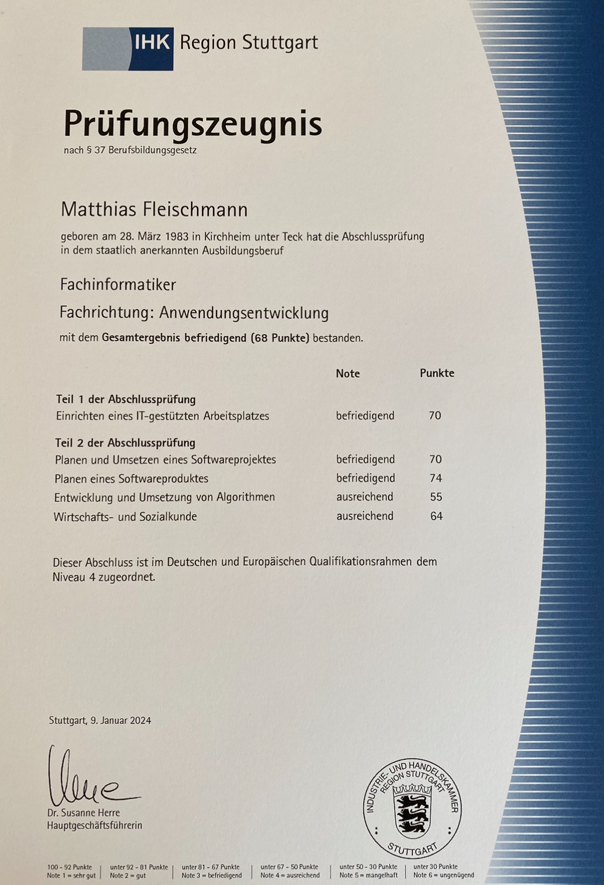

Zeugnisse
GFN Zeugnis
GFN
IHK Zeugnis
IHK
EXIN Zeugnis

EXIN
Herzlich willkommen! Nach Abschluss meiner Umschulung zum Fachinformatiker für Anwendungsentwicklung ist es mein Anliegen, anderen in ihrer Weiterbildung zu unterstützen.
Ich bin verheiratet, habe 2 Kinder und besitze die deutsche Nationalität. Ich bin gelernter Einzelhandelskaufmann und habe in den letzten Jahren überwiegend in der Logistik gearbeitet. Da ich mir eine berufliche Veränderung gewünscht habe, fing ich 2021 bei der GFN Stuttgart meine Umschulung zum Fachinformatiker für Anwendungsentwicklung an. Diese Zeit empfand ich als sehr positiv und sie hat mir viel Spaß bereitet. Als ich davon hörte, dass man bei der GFN auch die Möglichkeit hat, Trainer zu werden, war meine Begeisterung groß. Da ich schon seit meiner Kindheit eine große IT-Affinität besitze, würde ich gerne meine Freude am Programmieren und meine guten Menschenkenntnisse für den Beruf als Trainer einsetzen. Mich interessieren ebenfalls Themen aus dem kaufmännischen Bereich sowie der Systemintegration und ich wäre somit in Zukunft auch für andere Lernfelder einsetzbar. Ich teile schon immer gerne mein Wissen mit anderen und kann auf verständliche Weise Dinge erklären. Der Gedanke, als Trainer anderen zu helfen, würde mir einen persönlichen Sinn verleihen. Liebend gerne würde ich diesen Weg mit der GFN gehen.
Lagerist, Metabo, Nürtingen
01/2017 - 04/2020
Sachbearbeiter, BW Papersystems, Nürtingen
10/2016 - 12/2016
Lagerist, Borg Warner, Oberboihingen
12/2015 - 09/2016
Bürokraft, Herbert Geissler, Reutlingen
08/2015 - 11/2015
Bürokraft, Logwin, Neckartenzlingen
10/2014 - 07/2015
Lagerist, Hugo Boss, Wendlingen
11/2006 - 07/2014
Einzelhandelskaufmann, Foto Jakob, Kirchheim/Teck
09/2003 - 08/2005
Fachinformatiker Anwendungsentwicklung, GFN, Stuttgart
07/2021 - 07/2023
Einzelhandelskaufmann, Foto Jakob, Kirchheim/Teck
09/2000 - 08/2003
Realschulabschluss, Fritz-Ruoff Schule, Nürtingen
09/2005 - 07/2006
Fachschule für Bürotechnik, Schöllkopf Schule, Kirchheim/Teck
09/1999 - 07/2000
Hauptschulabschluss, Teck Schule, Dettingen/Teck
09/1994 - 07/1999
Fachinformatiker Vorbereitungskurs, GFN, Stuttgart
05/2021 - 06/2021
Elternzeit
05/2020 - 06/2020